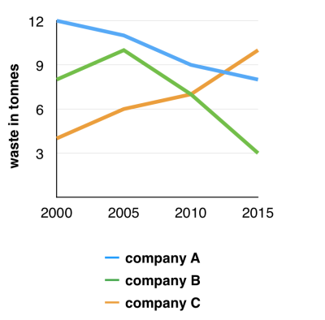

You should spend about 20 minutes on this task.
The graph below shows the amounts of waste produced by three companies over a period of 15 years.
Summarise the information by selecting and reporting the main features and make comparisons where relevant.
Write at least 150 words.

The line graph compares three companies in terms of their waste output between the years 2000 and 2015.
It is clear that there were significant changes in the amounts of waste produced by all three companies shown on the graph. While companies A and B saw waste output fall over the 15-year period, the amount of waste produced by company C increased considerably.
In 2000, company A produced 12 tonnes of waste, while companies B and C produced around 8 tonnes and 4 tonnes of waste material respectively. Over the following 5 years, the waste output of companies B and C rose by around 2 tonnes, but the figure for company A fell by approximately 1 tonne.
From 2005 to 2015, company A cut waste production by roughly 3 tonnes, and company B reduced its waste by around 7 tonnes. By contrast, company C saw an increase in waste production of approximately 4 tonnes over the same 10-year period. By 2015, company C’s waste output had risen to 10 tonnes, while the respective amounts of waste from companies A and B had dropped to 8 tonnes and only 3 tonnes.
(192 words, band 9)
You should spend about 40 minutes on this task.
Some people think that instead of preventing climate change, we need to find a way to live with it. To what extent do you agree or disagree?
Give reasons for your answer and include any relevant examples from your own knowledge or experience.
Write at least 250 words.
Climate change represents a major threat to life on Earth, but some people argue that we need to accept it rather than try to stop it. I completely disagree with this opinion, because I believe that we still have time to tackle this issue and reduce the human impact on the Earth's climate.
There are various measures that governments and individuals could take to prevent, or at least mitigate, climate change. Governments could introduce laws to limit the carbon dioxide emissions that lead to global warming. They could impose “green taxes” on drivers, airline companies and other polluters, and they could invest in renewable energy production from solar, wind or water power. As individuals, we should also try to limit our contribution to climate change, by becoming more energy efficient, by flying less, and by using bicycles and public transport. Furthermore, the public can affect the actions of governments by voting for politicians who propose to tackle climate change, rather than for those who would prefer to ignore it.
If instead of taking the above measures we simply try to live with climate change, I believe that the consequences will be disastrous. To give just one example, I am not optimistic that we would be able to cope with even a small rise in sea levels. Millions of people would be displaced by flooding, particularly in countries that do not have the means to safeguard low-lying areas. These people would lose their homes and their jobs, and they would be forced to migrate to nearby cities or perhaps to other countries. The potential for human suffering would be huge, and it is likely that we would see outbreaks of disease and famine, as well as increased homelessness and poverty.
In conclusion, it is clear to me that we must address the problem of climate change, and I disagree with those who argue that we can find ways to live with it. (322 words, band 9)